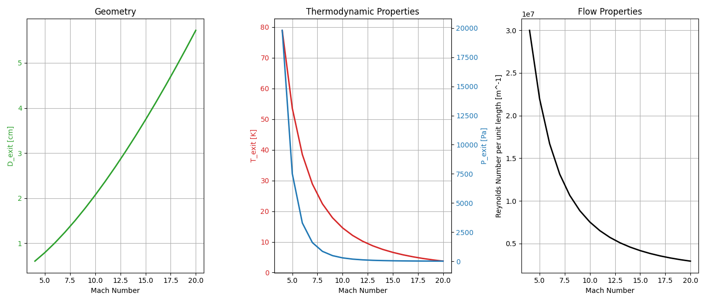

Technical Analysis
Flow Analysis
Four sequential analyses — isentropic flow sizing, helium viscosity characterization, contour generation via Sivells' Method of Characteristics, and CFD validation — build from first principles to a validated Mach 14 nozzle design.
Isentropic
Flow Analysis
Before generating a nozzle contour, an isentropic analysis was performed to establish the fundamental flow conditions at the design point. Assuming calorically perfect helium and no losses, the isentropic relations directly link reservoir conditions to the exit state as a function of Mach number.
This analysis compared candidate operating points across a range of Mach numbers, evaluating exit temperature, exit pressure, unit Reynolds number, and required throat-to-exit area ratio. The results confirmed that Mach 14 with helium is achievable within the tunnel's pressure and temperature limits, and set the target conditions used in all downstream analyses.

Isentropic analysis — exit temperature, exit pressure, unit Reynolds number, and nozzle diameter compared across the operating Mach range. Helium reservoir at 500 K, 20 bar.
Helium
characterization
Before generating a nozzle contour with Sivells' code, helium's transport properties must be characterized across the full operating temperature range — particularly at the cryogenic temperatures reached as helium expands from the 500 K reservoir to Mach 14. Sivells' code requires viscosity constants as input card parameters to perform its boundary layer displacement correction.
Helium's viscosity does not follow the Sutherland law formulated for air at these temperatures. A Sutherland law regression was therefore performed against tabulated NIST data across the nozzle's operating temperature range to extract the Sutherland constants (C₁, C₂) appropriate for helium. These constants were then supplied directly as input cards to Sivells' code.
The curve fit shown below confirms the regression accurately reproduces helium's low-temperature viscosity behavior, validating the constants used in Sivells' boundary layer correction routine.

Helium viscosity Sutherland regression — tabulated NIST data (blue) vs. Sutherland fit (orange). The extracted constants C₁ and C₂ are supplied as input cards to Sivells' MOC code.
Helium vs. Air vs. Nitrogen — key properties
| Property | Helium | Air | Nitrogen |
|---|---|---|---|
| γ | 1.667 | 1.400 | 1.400 |
| R (gas constant) | 2.07 J/g·K | 0.287 J/g·K | 0.297 J/g·K |
| c_p (specific heat) | 5.193 J/g·K | 1.005 J/g·K | 1.040 J/g·K |
| Liquefaction temp. | 4.2 K | 90 K | 77 K |
| Sound Speed (300 K) | 1020 m/s | 347 m/s | 353 m/s |
Method of
Characteristics
With isentropic conditions established and helium viscosity constants in hand, nozzle wall contours were generated using Sivells' MOC code — a well-established and trusted program for aerodynamic nozzle design (Sivells, 1978). The code uses the Method of Characteristics to convert the governing partial differential equations for supersonic flow into ordinary differential equations along characteristic lines, tracing the curves along which pressure disturbances propagate through the gas.
The method applies to two-dimensional, supersonic, steady, inviscid, and irrotational flow of ideal helium. Only the diverging section is designed by MOC; the converging section is assumed to deliver a uniform sonic condition at the throat. The helium viscosity constants derived in Analysis 02 were supplied directly as input card parameters to Sivells' code to account for boundary layer displacement.
Characteristic line intersections are used to cancel Mach wave reflections, producing a shockless, uniform exit flow at the design Mach number of 14.
Validation result: Contours generated by Sivells' code showed remarkable similarity to CFD results across the Mach 6–14 operating range, confirming the analytical approach.

Characteristic lines, wall contour, and boundary layer displacement (\(\delta^*\)) — MOC output
Three steps to a
shockless contour
Set the Exit Condition
Choose M_exit = 14 and compute the maximum expansion angle θ_max = ν(M_exit)/2 using the Prandtl-Meyer function for helium.
Trace Characteristic Lines
Project left- and right-running Mach waves from the throat. At each intersection, enforce flow-turning and continuity to find local Mach number and wall angle.
Cancel Wave Reflections
The wall is shaped so each incident Mach wave arrives at zero reflection angle — canceling it and producing uniform parallel flow at the exit plane.
CFD via ANSYS

CFD Mach number contour — nozzle cross-section. Blue (M ≈ 0.17) at inlet expanding to red (M ≈ 4.65) at exit. Full Mach 14 simulation uses helium properties at operating conditions.
CFD via ANSYS was used to verify the accuracy and performance of the MOC nozzle contour. While the MOC code provides a theoretical shock-free design based on simplifying assumptions, CFD allows for detailed analysis of real flow behavior — viscous effects, boundary layer growth, and potential flow separation. By comparing CFD results with the MOC-generated contour, the team evaluates flow uniformity, Mach number distribution, and the presence of any residual shocks or expansion waves.
The simulations specify ideal helium as the working fluid with symmetry applied where applicable, and mesh refinement concentrated near walls, the throat, and expansion regions to ensure accuracy in high-gradient zones.
Analysis objectives
| Mach distribution | Validate M = 14 at exit |
| Flow uniformity | Check parallel exit flow |
| Shock structure | Detect residual Mach waves |
| Boundary layer | Quantify displacement thickness |
| Flow separation | Identify detachment risk |
Turbulence model — k-ω SST: Selected for accurate prediction of adverse pressure gradient boundary layers and flow separation, which are critical in highly expanded supersonic nozzle flows.
Boundary conditions
| Reservoir pressure | 20 bar (2 MPa) |
| Reservoir temperature | 500 K |
| Inlet flow direction | Axial |
| Outlet static pressure | 1 Bar |
| Wall — thermal | Adiabatic |
| Wall — velocity | No-slip |
| Turbulence model | k-ω SST |
| Fluid | Ideal helium |
| Domain type | 2D axisymmetric / 3D |
Mesh refinement is concentrated at the throat, wall boundary layer, and diverging expansion section to ensure solution accuracy in the high-gradient regions of the compressible flow field.